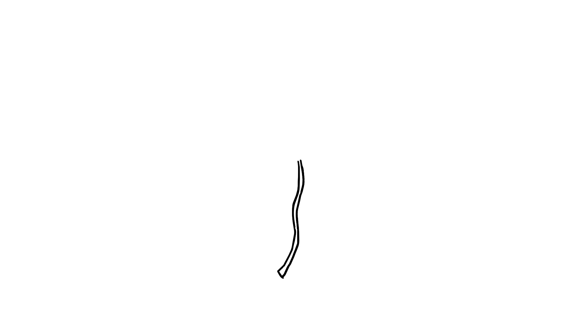

Start with the Stem
Every rose begins with a simple line. The stem gives the flower its direction and becomes the foundation for everything that will grow around it.
Draw one long, slightly curved line. It does not need to be perfectly straight. Let the line bend naturally, like the stem of a real rose.
